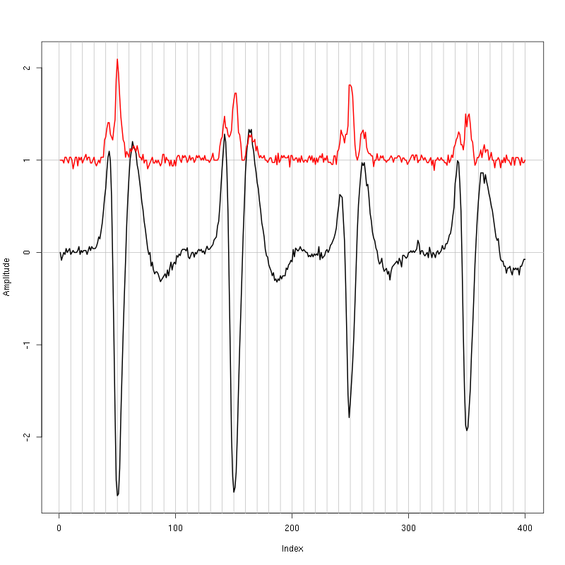
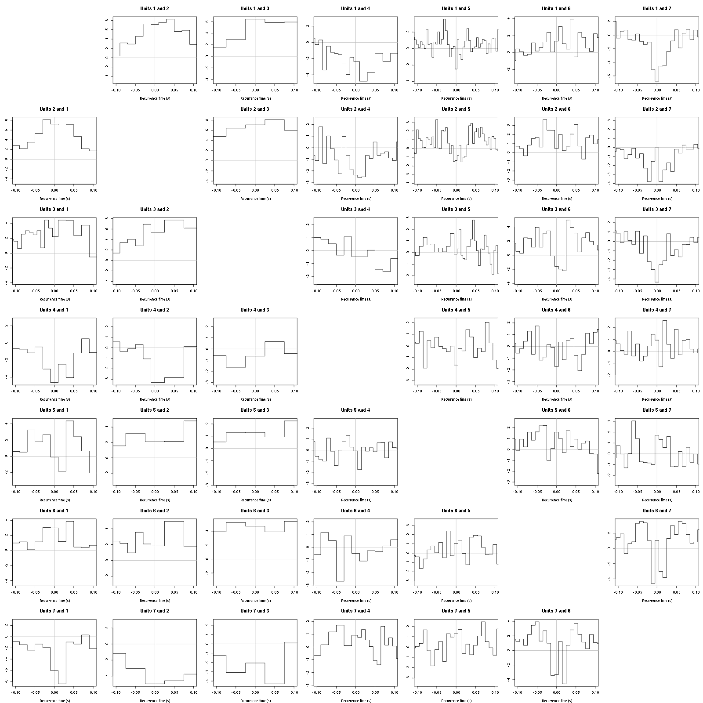
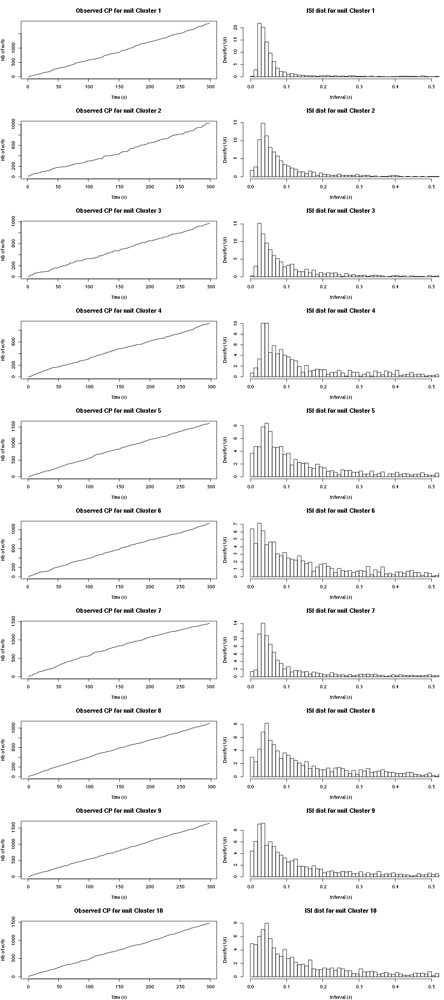

Sorting data set 20010217 tetrode D (channels 10, 12, 14, 15)
Table of Contents
- 1. Introduction
- 2. Tetrode B (channels 10, 12, 14, 15) analysis
- 2.1. Loading the data
- 2.2. Five number summary
- 2.3. Plot the data
- 2.4. Data normalization
- 2.5. Spike detection
- 2.6. Cuts
- 2.7. Events
- 2.8. Removing obvious superposition
- 2.9. Dimension reduction
- 2.10. Exporting for
GGobi - 2.11. kmeans clustering with 8 clusters
- 2.12. kmeans clustering with 10 clusters
- 2.13. Long cuts creation
- 2.14. Peeling
- 2.15. Getting the spike trains
- 2.16. Getting the inter spike intervals and the forward and backward recurrence times
- 2.17.
all_at_oncetest - 2.18. Analysis of
trial_02 - 2.19. Systematic analysis of the 10 trials from
Spontaneous 1 - 2.20. Systematic analysis of the first 25 trials from
Spontaneous 3 - 2.21. Systematic analysis of the 10 trials from
Spontaneous 4 - 2.22. Systematic analysis of the 10 trials from
Spontaneous 5 - 2.23. Systematic analysis of the 10 trials from
Spontaneous 6 - 2.24. Systematic analysis of the 10 trials from
Spontaneous 7 - 2.25. Systematic analysis of the 10 trials from
Spontaneous 8 - 2.26. Systematic analysis of the 10 trials from
Spontaneous 9
1 Introduction
This is the description of how to do the (spike) sorting of tetrode D (channels 10, 12, 14, 15) from data set locust20010217.
1.1 Getting the data
The data are split into two HDF5 files, locust20010217_part1.hdf5 and locust20010217_part2.hdf5, located on zenodo and can be downloaded interactivelly with a web browser or by typing at the command line:
wget https://zenodo.org/record/21589/files/locust20010217.hdf5
In the sequel I will assume that R has been started in the directory where the data were downloaded (in other words, the working direcory should be the one containing the data.
The data are in HDF5 format and the easiest way to get them into R is to install the rhdf5 package from Bioconductor. Once the installation is done, the library is loaded into R with:
library(rhdf5)
We can then get a (long and detailed) listing of our data file content with (result not shown):
h5ls("locust20010217_part1.hdf5")
There must be functions to get access to the metadata contained in the file with rhdf5 but I do not know them so I'm using HDFView called from the command line for that. All the relevant information about the experiment are stored in these metadata so you should take a look at them.
1.2 Getting the code
The code can be sourced as follows:
source("https://raw.githubusercontent.com/christophe-pouzat/zenodo-locust-datasets-analysis/master/R_Sorting_Code/sorting_with_r.R")
A description of the functions contained in this file can be found at the following address: http://xtof.perso.math.cnrs.fr/locust.html.
2 Tetrode B (channels 10, 12, 14, 15) analysis
We now want to get our "model", that is a dictionnary of waveforms (one waveform per neuron and per recording site). To that end we are going to use the first 29 s of data contained in the Spontaneous_1/trial_01 Group (in HDF5 jargon).
2.1 Loading the data
So we start by loading the data from channels 10, 12, 14, 15 into R:
lD = get_data(1,"Spontaneous 1",
channels = c("ch10","ch12","ch14","ch15"),
file="locust20010217.hdf5")
dim(lD)
| 431548 |
| 4 |
2.2 Five number summary
We get the Five number summary with:
summary(lD,digits=2)
| Min. :1626 | Min. :1486 | Min. :1432 | Min. :1665 |
| 1st Qu.:2014 | 1st Qu.:2005 | 1st Qu.:2001 | 1st Qu.:2010 |
| Median :2045 | Median :2045 | Median :2044 | Median :2046 |
| Mean :2045 | Mean :2045 | Mean :2044 | Mean :2046 |
| 3rd Qu.:2077 | 3rd Qu.:2086 | 3rd Qu.:2088 | 3rd Qu.:2082 |
| Max. :2383 | Max. :2495 | Max. :2526 | Max. :2378 |
It shows that the channels have very similar properties as far as the median and the inter-quartile range (IQR) are concerned. The minimum is much smaller on the third channel. This suggests that the largest spikes are going to be found here (remember that spikes are going mainly downwards).
2.3 Plot the data
We "convert" the data matrix lD into a time series object with:
lD = ts(lD,start=0,freq=15e3)
We can then plot the whole data with (not shown since it makes a very figure):
plot(lD)
2.4 Data normalization
As always we normalize such that the median absolute deviation (MAD) becomes 1:
lD.mad = apply(lD,2,mad) lD = t((t(lD)-apply(lD,2,median))/lD.mad) lD = ts(lD,start=0,freq=15e3)
Once this is done we explore interactively the data with:
explore(lD,col=c("black","grey70"))
Most spikes can be seen on the 4 recording sites and there are different spike waveform!
2.5 Spike detection
Since the spikes are mainly going downwards, we will detect valleys instead of peaks:
lDf = -lD filter_length = 5 threshold_factor = 4 lDf = filter(lDf,rep(1,filter_length)/filter_length) lDf[is.na(lDf)] = 0 lDf.mad = apply(lDf,2,mad) lDf_mad_original = lDf.mad lDf = t(t(lDf)/lDf_mad_original) thrs = threshold_factor*c(1,1,1,1) bellow.thrs = t(t(lDf) < thrs) lDfr = lDf lDfr[bellow.thrs] = 0 remove(lDf) sp0 = peaks(apply(lDfr,1,sum),15) remove(lDfr) sp0
eventsPos object with indexes of 1307 events. Mean inter event interval: 329.95 sampling points, corresponding SD: 329.71 sampling points Smallest and largest inter event intervals: 16 and 2961 sampling points.
Every time a filter length / threshold combination is tried, the detection is checked interactively with:
explore(sp0,lD,col=c("black","grey50"))
2.6 Cuts
We proceed as usual to get the cut length right:
evts = mkEvents(sp0,lD,49,50)
evts.med = median(evts)
evts.mad = apply(evts,1,mad)
plot_range = range(c(evts.med,evts.mad))
plot(evts.med,type="n",ylab="Amplitude",
ylim=plot_range)
abline(v=seq(0,400,10),col="grey")
abline(h=c(0,1),col="grey")
lines(evts.med,lwd=2)
lines(evts.mad,col=2,lwd=2)

Figure 1: Setting the cut length for the data from tetrode D (channels 10, 12, 14, 15). We see that we need 15 points before the peak and 30 after.
We see that we need roughly 15 points before the peak and 30 after.
2.7 Events
We now cut our events:
evts = mkEvents(sp0,lD,14,30) summary(evts)
events object deriving from data set: lD. Events defined as cuts of 45 sampling points on each of the 4 recording sites. The 'reference' time of each event is located at point 15 of the cut. There are 1307 events in the object.
We can as usual visualize the first 200 events with:
evts[,1:200]
Figure 2: First 200 events for the data from tetrode D (channels 1, 3, 5, 7).
We do see some superposition and it's therefore a good idea to remove the most obvious of them before reducing the dimension.
2.8 Removing obvious superposition
We define function goodEvtsFct with:
goodEvtsFct = function(samp,thr=3) {
samp.med = apply(samp,1,median)
samp.mad = apply(samp,1,mad)
below = samp.med < 0
samp.r = apply(samp,2,function(x) {x[below] = 0;x})
apply(samp.r,2,function(x) all(abs(x-samp.med) < thr*samp.mad))
}
We apply it with a threshold of 5 times the MAD:
goodEvts = goodEvtsFct(evts,5)
2.9 Dimension reduction
We do a PCA on our good events set:
evts.pc = prcomp(t(evts[,goodEvts]))
We look at the projections on the first 4 principle components:
panel.dens = function(x,...) {
usr = par("usr")
on.exit(par(usr))
par(usr = c(usr[1:2], 0, 1.5) )
d = density(x, adjust=0.5)
x = d$x
y = d$y
y = y/max(y)
lines(x, y, col="grey50", ...)
}
pairs(evts.pc$x[,1:4],pch=".",gap=0,diag.panel=panel.dens)
Figure 3: The good events from tetrode D (channels 10, 12, 14, 15) projected onto the first 4 PCs.
I see 6/7 clusters. We can also look at the projections on the PC pairs defined by the next 4 PCs:
pairs(evts.pc$x[,5:8],pch=".",gap=0,diag.panel=panel.dens)
Figure 4: The good events from tetrode D (channels 10, 12, 14, 15) projected onto PC 5 to 8.
There is not much structure left beyond the 4th PC.
2.10 Exporting for GGobi
We export the events projected onto the first 8 principle components in csv format:
write.csv(evts.pc$x[,1:8],file="tetD_evts.csv")
Using the rotation display of GGobi with the first 3 principle components and the 2D tour with the first 4 components I see 8 clusters. So we will start with a kmeans with 8 centers.
2.11 kmeans clustering with 8 clusters
nbc=8
set.seed(20110928,kind="Mersenne-Twister")
km = kmeans(evts.pc$x[,1:4],centers=nbc,iter.max=100,nstart=100)
label = km$cluster
cluster.med = sapply(1:nbc, function(cIdx) median(evts[,goodEvts][,label==cIdx]))
sizeC = sapply(1:nbc,function(cIdx) sum(abs(cluster.med[,cIdx])))
newOrder = sort.int(sizeC,decreasing=TRUE,index.return=TRUE)$ix
cluster.mad = sapply(1:nbc, function(cIdx) {ce = t(evts[,goodEvts]);ce = ce[label==cIdx,];apply(ce,2,mad)})
cluster.med = cluster.med[,newOrder]
cluster.mad = cluster.mad[,newOrder]
labelb = sapply(1:nbc, function(idx) (1:nbc)[newOrder==idx])[label]
We write a new csv file with the data and the labels:
write.csv(cbind(evts.pc$x[,1:4],labelb),file="tetD_sorted.csv")
That looks good!
We get a plot showing the events attributed to each of the first 4 units with:
layout(matrix(1:4,nr=4)) par(mar=c(1,1,1,1)) for (i in (1:4)) plot(evts[,goodEvts][,labelb==i],y.bar=5)
Figure 5: The events of the first four clusters of tetrode D
We get a plot showing the events attributed to each of the last 4 units with:
layout(matrix(1:4,nr=4)) par(mar=c(1,1,1,1)) for (i in (5:8)) plot(evts[,goodEvts][,labelb==i],y.bar=5)
Figure 6: The events of the last four clusters of tetrode D
In fact I see rather 2 units in cluster 4 and 7 so I redo the clustering with 10 units
2.12 kmeans clustering with 10 clusters
nbc=10
set.seed(20110928,kind="Mersenne-Twister")
km = kmeans(evts.pc$x[,1:4],centers=nbc,iter.max=100,nstart=100)
label = km$cluster
cluster.med = sapply(1:nbc, function(cIdx) median(evts[,goodEvts][,label==cIdx]))
sizeC = sapply(1:nbc,function(cIdx) sum(abs(cluster.med[,cIdx])))
newOrder = sort.int(sizeC,decreasing=TRUE,index.return=TRUE)$ix
cluster.mad = sapply(1:nbc, function(cIdx) {ce = t(evts[,goodEvts]);ce = ce[label==cIdx,];apply(ce,2,mad)})
cluster.med = cluster.med[,newOrder]
cluster.mad = cluster.mad[,newOrder]
labelb = sapply(1:nbc, function(idx) (1:nbc)[newOrder==idx])[label]
We get a plot showing the events attributed to each of the first 5 units with:
layout(matrix(1:5,nr=5)) par(mar=c(1,1,1,1)) for (i in (1:5)) plot(evts[,goodEvts][,labelb==i],y.bar=5)
Figure 7: The events of the first five clusters of tetrode D
We get a plot showing the events attributed to each of the last 5 units with:
layout(matrix(1:5,nr=5)) par(mar=c(1,1,1,1)) for (i in (6:10)) plot(evts[,goodEvts][,labelb==i],y.bar=5)
Figure 8: The events of the last five clusters of tetrode D
2.13 Long cuts creation
For the peeling process we need templates that start and end at 0 (we will otherwise generate artifacts when we subtract). We proceed "as usual" with (I tried first with the default value for parameters before and after but I reduced their values after looking at the centers, see the next figure):
c_before = 49
c_after = 80
centers = lapply(1:nbc, function(i)
mk_center_list(sp0[goodEvts][labelb==i],lD,
before=c_before,after=c_after))
names(centers) = paste("Cluster",1:nbc)
We then make sure that our cuts are long enough by looking at them. Starting with the first five clusters:
layout(matrix(1:5,nr=5))
par(mar=c(1,4,1,1))
the_range=c(min(sapply(centers,function(l) min(l$center))),
max(sapply(centers,function(l) max(l$center))))
for (i in 1:5) {
template = centers[[i]]$center
plot(template,lwd=2,col=2,
ylim=the_range,type="l",ylab="")
abline(h=0,col="grey50")
abline(v=(1:2)*(c_before+c_after)+1,col="grey50")
lines(filter(template,rep(1,filter_length)/filter_length),
col=1,lty=3,lwd=2)
abline(h=-threshold_factor,col="grey",lty=2,lwd=2)
lines(centers[[i]]$centerD,lwd=2,col=4)
}
Figure 9: The first five templates (red) together with their first derivative (blue) all with the same scale.
The last five clusters:
layout(matrix(1:5,nr=5))
par(mar=c(1,4,1,1))
the_range=c(min(sapply(centers,function(l) min(l$center))),
max(sapply(centers,function(l) max(l$center))))
for (i in 6:10) {
template = centers[[i]]$center
plot(template,lwd=2,col=2,
ylim=the_range,type="l",ylab="")
abline(h=0,col="grey50")
abline(v=(1:2)*(c_before+c_after)+1,col="grey50")
lines(filter(template,rep(1,filter_length)/filter_length),
col=1,lty=3,lwd=2)
abline(h=-threshold_factor,col="grey",lty=2,lwd=2)
lines(centers[[i]]$centerD,lwd=2,col=4)
}
Figure 10: The last five templates (red) together with their first derivative (blue) all with the same scale.
We see that with our setting only units 1, 2, 3, 4 and 8 are going to be reliably detected.
2.14 Peeling
We can now do the peeling.
2.14.1 Round 0
We classify, predict, subtract and check how many non-classified events we get:
round0 = lapply(as.vector(sp0),classify_and_align_evt,
data=lD,centers=centers,
before=c_before,after=c_after)
pred0 = predict_data(round0,centers,data_length = dim(lD)[1])
lD_1 = lD - pred0
sum(sapply(round0, function(l) l[[1]] == '?'))
2
We can see the difference before / after peeling for the data between 1.0 and 1.1 s:
ii = 1:1500 + 1.0*15000
tt = ii/15000
par(mar=c(1,1,1,1))
plot(tt, lD[ii,1], axes = FALSE,
type="l",ylim=c(-50,10),
xlab="",ylab="")
lines(tt, lD_1[ii,1], col='red')
lines(tt, lD[ii,2]-15, col='black')
lines(tt, lD_1[ii,2]-15, col='red')
lines(tt, lD[ii,3]-25, col='black')
lines(tt, lD_1[ii,3]-25, col='red')
lines(tt, lD[ii,4]-40, col='black')
lines(tt, lD_1[ii,4]-40, col='red')

Figure 11: The first peeling illustrated on 100 ms of data, the raw data are in black and the first subtration in red.
2.14.2 Round 1
We keep going, using the subtracted data lD_1 as "raw data", detecting only all sites:
lDf = -lD_1 lDf = filter(lDf,rep(1,filter_length)/filter_length) lDf[is.na(lDf)] = 0 lDf = t(t(lDf)/lDf_mad_original) thrs = threshold_factor*c(1,1,1,1) bellow.thrs = t(t(lDf) < thrs) lDfr = lDf lDfr[bellow.thrs] = 0 remove(lDf) sp1 = peaks(apply(lDfr,1,sum),15) remove(lDfr) sp1
eventsPos object with indexes of 67 events. Mean inter event interval: 6271.83 sampling points, corresponding SD: 7284.81 sampling points Smallest and largest inter event intervals: 50 and 27732 sampling points.
We classify, predict, subtract and check how many non-classified events we get:
round1 = lapply(as.vector(sp1),classify_and_align_evt,
data=lD_1,centers=centers,
before=c_before,after=c_after)
pred1 = predict_data(round1,centers,data_length = dim(lD)[1])
lD_2 = lD_1 - pred1
sum(sapply(round1, function(l) l[[1]] == '?'))
10
We look at what's left with (not shown):
explore(sp1,lD_2,col=c("black","grey50"))
We decide to stop here.
2.15 Getting the spike trains
round_all = c(round0,round1)
spike_trains = lapply(paste("Cluster",1:nbc),
function(cn) sapply(round_all[sapply(round_all,
function(l) l[[1]]==cn)],
function(l) l[[2]]+l[[3]]))
names(spike_trains) = paste("Cluster",1:nbc)
2.16 Getting the inter spike intervals and the forward and backward recurrence times
2.16.1 ISI distributions
We first get the ISI (inter spike intervals) of each unit:
isi = sapply(spike_trains, diff) names(isi) = names(spike_trains)
We get the ISI ECDF for the units with:
layout(matrix(1:(nbc+nbc %% 2),nr=ceiling(nbc/2))) par(mar=c(4,5,6,1)) for (cn in names(isi)) plot_isi(isi[[cn]],main=cn)
Figure 12: ISI ECDF for the ten units.
2.16.2 Forward and Backward Recurrence Times
On the data at hand that gives for units 1 to 7:
layout_matrix = matrix(0,nr=nbc-3,nc=nbc-3)
counter = 1
for (i in 1:(nbc-3))
for (j in 1:(nbc-3))
if (i != j) {
layout_matrix[i,j] = counter
counter = counter +1
}
layout(layout_matrix)
par(mar=c(4,3,4,1))
for (i in 1:(nbc-3))
for (j in 1:(nbc-3))
if (i != j)
test_rt(spike_trains[[i]],
spike_trains[[j]],
ylab="",main=paste("Units",i,"and",j))
Figure 13: Graphical tests for the first 7 units of the Backward and Forward Reccurrence Times distrution agaisnt the null hypothesis (no interaction). If the null is correct, the curves should be IID draws from a standard normal distribution.
On this time scale with this number of events, there are a lot of signs of interactions.
2.17 all_at_once test
We test the function with:
## We need again an un-normalized version of the data
ref_data = get_data(1,"Spontaneous 1",
channels = c("ch10","ch12","ch14","ch15"),
file="locust20010217.hdf5")
## We can now use our function
aao=all_at_once(ref_data,centers,
thres=threshold_factor*c(1,1,1,1),
filter_length_1=filter_length,
filter_length=filter_length,
minimalDist_1=15,
minimalDist=15,
before=c_before,
after=c_after,
detection_cycle=c(0,0),
verbose=2)
The five number summary is:
ch10 ch12 ch14 ch15
Min. :1626 Min. :1486 Min. :1432 Min. :1665
1st Qu.:2014 1st Qu.:2005 1st Qu.:2001 1st Qu.:2010
Median :2045 Median :2045 Median :2044 Median :2046
Mean :2045 Mean :2045 Mean :2044 Mean :2046
3rd Qu.:2077 3rd Qu.:2086 3rd Qu.:2088 3rd Qu.:2082
Max. :2383 Max. :2495 Max. :2526 Max. :2378
Doing now round 0 detecting on all sites
Total Cluster 1 Cluster 2 Cluster 3 Cluster 4 Cluster 5 Cluster 6
1307 119 115 99 112 144 123
Cluster 7 Cluster 8 Cluster 9 Cluster 10 ?
180 99 134 180 2
Doing now round 1 detecting on all sites
Total Cluster 1 Cluster 2 Cluster 3 Cluster 4 Cluster 5 Cluster 6
67 1 3 0 1 6 7
Cluster 7 Cluster 8 Cluster 9 Cluster 10 ?
6 7 14 12 10
Global counts at classification's end:
Total Cluster 1 Cluster 2 Cluster 3 Cluster 4 Cluster 5 Cluster 6
1378 120 118 99 113 150 130
Cluster 7 Cluster 8 Cluster 9 Cluster 10 ?
186 106 148 192 16
We see that we are getting back the numbers we obtained before step by step.
We can compare the "old" and "new" centers with (not shown):
layout(matrix(1:nbc,nr=nbc))
par(mar=c(1,1,1,1))
for (i in 1:nbc) {
plot(centers[[i]]$center,lwd=2,col=2,
ylim=the_range,type="l")
abline(h=0,col="grey50")
abline(v=(1:3)*(c_before+c_after)+1,col="grey50")
lines(aao$centers[[i]]$center,lwd=1,col=4)
}
They are not exactly identical since the new version is computed with all events (superposed or not) attributed to each neuron.
2.18 Analysis of trial_02
We start by loading the data:
ref_data = get_data(2,"Spontaneous 1",
channels = c("ch10","ch12","ch14","ch15"),
file="locust20010217.hdf5")
We then detect and classify the events using a slightly less verbose output:
analysis_s1_t02 = all_at_once(ref_data,aao$centers,
thres=threshold_factor*c(1,1,1,1),
filter_length_1=filter_length,
filter_length=filter_length,
minimalDist_1=15,
minimalDist=15,
before=c_before,
after=c_after,
detection_cycle=c(0,0),
verbose=1)
The five number summary is:
ch10 ch12 ch14 ch15
Min. :1503 Min. :1443 Min. :1178 Min. :1582
1st Qu.:2013 1st Qu.:2005 1st Qu.:2001 1st Qu.:2010
Median :2045 Median :2045 Median :2044 Median :2046
Mean :2045 Mean :2045 Mean :2044 Mean :2046
3rd Qu.:2077 3rd Qu.:2086 3rd Qu.:2087 3rd Qu.:2083
Max. :2387 Max. :2410 Max. :2500 Max. :2429
Global counts at classification's end:
Total Cluster 1 Cluster 2 Cluster 3 Cluster 4 Cluster 5 Cluster 6
1431 153 168 112 122 162 95
Cluster 7 Cluster 8 Cluster 9 Cluster 10 ?
132 111 130 220 26
2.19 Systematic analysis of the 10 trials from Spontaneous 1
2.19.1 Create tetD_analysis directory
We will carry out an analysis of the 10 trials from Spontaneous 1. We will organize the analysis such that after each trial, the list returned by all_at_once is written to disk in a sub-directory called tetD_analysis. So we start by creating this sub-directory if it does not already exist:
if (!dir.exists("tetD_analysis"))
dir.create("tetD_analysis")
2.19.2 Doing the job
a_Spontaneous_1_tetD=sort_many_trials(inter_trial_time=30*15000,
get_data_fct=function(i,s) get_data(i,s,
channels = c("ch10","ch12","ch14","ch15"),
file="locust20010217.hdf5"),
stim_name="Spontaneous 1",
trial_nbs=1:10,
centers=aao$centers,
counts=aao$counts,
all_at_once_call_list=list(thres=threshold_factor*c(1,1,1,1),
filter_length_1=filter_length, filter_length=filter_length,
minimalDist_1=15, minimalDist=15,
before=c_before, after=c_after,
detection_cycle=c(0,0), verbose=1),
layout_matrix=matrix(c(1,1:11),nr=6),new_weight_in_update=0.01
)
***************
Doing now trial 1 of Spontaneous 1
The five number summary is:
ch10 ch12 ch14 ch15
Min. :1626 Min. :1486 Min. :1432 Min. :1665
1st Qu.:2014 1st Qu.:2005 1st Qu.:2001 1st Qu.:2010
Median :2045 Median :2045 Median :2044 Median :2046
Mean :2045 Mean :2045 Mean :2044 Mean :2046
3rd Qu.:2077 3rd Qu.:2086 3rd Qu.:2088 3rd Qu.:2082
Max. :2383 Max. :2495 Max. :2526 Max. :2378
Global counts at classification's end:
Total Cluster 1 Cluster 2 Cluster 3 Cluster 4 Cluster 5 Cluster 6
1371 118 118 103 117 146 131
Cluster 7 Cluster 8 Cluster 9 Cluster 10 ?
187 106 143 192 10
Trial 1 done!
******************
***************
Doing now trial 2 of Spontaneous 1
The five number summary is:
ch10 ch12 ch14 ch15
Min. :1503 Min. :1443 Min. :1178 Min. :1582
1st Qu.:2013 1st Qu.:2005 1st Qu.:2001 1st Qu.:2010
Median :2045 Median :2045 Median :2044 Median :2046
Mean :2045 Mean :2045 Mean :2044 Mean :2046
3rd Qu.:2077 3rd Qu.:2086 3rd Qu.:2087 3rd Qu.:2083
Max. :2387 Max. :2410 Max. :2500 Max. :2429
Global counts at classification's end:
Total Cluster 1 Cluster 2 Cluster 3 Cluster 4 Cluster 5 Cluster 6
1431 153 168 112 122 162 95
Cluster 7 Cluster 8 Cluster 9 Cluster 10 ?
132 111 130 220 26
Trial 2 done!
******************
***************
Doing now trial 3 of Spontaneous 1
The five number summary is:
ch10 ch12 ch14 ch15
Min. :1660 Min. :1493 Min. :1371 Min. :1620
1st Qu.:2014 1st Qu.:2005 1st Qu.:2001 1st Qu.:2010
Median :2045 Median :2045 Median :2044 Median :2046
Mean :2045 Mean :2045 Mean :2044 Mean :2046
3rd Qu.:2076 3rd Qu.:2085 3rd Qu.:2087 3rd Qu.:2082
Max. :2313 Max. :2446 Max. :2484 Max. :2391
Global counts at classification's end:
Total Cluster 1 Cluster 2 Cluster 3 Cluster 4 Cluster 5 Cluster 6
1309 142 121 59 122 167 110
Cluster 7 Cluster 8 Cluster 9 Cluster 10 ?
125 117 133 191 22
Trial 3 done!
******************
***************
Doing now trial 4 of Spontaneous 1
The five number summary is:
ch10 ch12 ch14 ch15
Min. :1452 Min. :1457 Min. :1333 Min. :1611
1st Qu.:2013 1st Qu.:2005 1st Qu.:2000 1st Qu.:2010
Median :2045 Median :2045 Median :2044 Median :2046
Mean :2045 Mean :2045 Mean :2044 Mean :2046
3rd Qu.:2076 3rd Qu.:2085 3rd Qu.:2088 3rd Qu.:2083
Max. :2393 Max. :2475 Max. :2523 Max. :2399
Global counts at classification's end:
Total Cluster 1 Cluster 2 Cluster 3 Cluster 4 Cluster 5 Cluster 6
1360 155 132 105 121 176 105
Cluster 7 Cluster 8 Cluster 9 Cluster 10 ?
130 106 142 172 16
Trial 4 done!
******************
***************
Doing now trial 5 of Spontaneous 1
The five number summary is:
ch10 ch12 ch14 ch15
Min. :1597 Min. :1436 Min. :1275 Min. :1622
1st Qu.:2013 1st Qu.:2005 1st Qu.:2000 1st Qu.:2010
Median :2045 Median :2045 Median :2044 Median :2046
Mean :2045 Mean :2045 Mean :2044 Mean :2046
3rd Qu.:2077 3rd Qu.:2085 3rd Qu.:2088 3rd Qu.:2083
Max. :2315 Max. :2422 Max. :2483 Max. :2418
Global counts at classification's end:
Total Cluster 1 Cluster 2 Cluster 3 Cluster 4 Cluster 5 Cluster 6
1355 172 187 112 99 153 92
Cluster 7 Cluster 8 Cluster 9 Cluster 10 ?
120 102 110 182 26
Trial 5 done!
******************
***************
Doing now trial 6 of Spontaneous 1
The five number summary is:
ch10 ch12 ch14 ch15
Min. :1487 Min. :1399 Min. :1383 Min. :1607
1st Qu.:2014 1st Qu.:2005 1st Qu.:2000 1st Qu.:2010
Median :2045 Median :2045 Median :2044 Median :2046
Mean :2045 Mean :2045 Mean :2044 Mean :2046
3rd Qu.:2077 3rd Qu.:2086 3rd Qu.:2088 3rd Qu.:2083
Max. :2370 Max. :2470 Max. :2508 Max. :2421
Global counts at classification's end:
Total Cluster 1 Cluster 2 Cluster 3 Cluster 4 Cluster 5 Cluster 6
1375 160 127 106 115 158 132
Cluster 7 Cluster 8 Cluster 9 Cluster 10 ?
147 88 134 185 23
Trial 6 done!
******************
***************
Doing now trial 7 of Spontaneous 1
The five number summary is:
ch10 ch12 ch14 ch15
Min. :1662 Min. :1441 Min. :1201 Min. :1655
1st Qu.:2014 1st Qu.:2005 1st Qu.:2001 1st Qu.:2010
Median :2045 Median :2045 Median :2044 Median :2046
Mean :2045 Mean :2045 Mean :2044 Mean :2046
3rd Qu.:2077 3rd Qu.:2085 3rd Qu.:2088 3rd Qu.:2083
Max. :2302 Max. :2387 Max. :2478 Max. :2396
Global counts at classification's end:
Total Cluster 1 Cluster 2 Cluster 3 Cluster 4 Cluster 5 Cluster 6
1344 142 111 77 115 161 113
Cluster 7 Cluster 8 Cluster 9 Cluster 10 ?
143 99 158 207 18
Trial 7 done!
******************
***************
Doing now trial 8 of Spontaneous 1
The five number summary is:
ch10 ch12 ch14 ch15
Min. :1633 Min. :1348 Min. :1346 Min. :1589
1st Qu.:2014 1st Qu.:2005 1st Qu.:2001 1st Qu.:2010
Median :2045 Median :2045 Median :2044 Median :2046
Mean :2045 Mean :2045 Mean :2044 Mean :2046
3rd Qu.:2077 3rd Qu.:2086 3rd Qu.:2088 3rd Qu.:2083
Max. :2363 Max. :2463 Max. :2540 Max. :2430
Global counts at classification's end:
Total Cluster 1 Cluster 2 Cluster 3 Cluster 4 Cluster 5 Cluster 6
1436 165 190 129 103 140 87
Cluster 7 Cluster 8 Cluster 9 Cluster 10 ?
103 112 189 195 23
Trial 8 done!
******************
***************
Doing now trial 9 of Spontaneous 1
The five number summary is:
ch10 ch12 ch14 ch15
Min. :1638 Min. :1434 Min. :1469 Min. :1587
1st Qu.:2014 1st Qu.:2005 1st Qu.:2000 1st Qu.:2010
Median :2045 Median :2045 Median :2044 Median :2046
Mean :2045 Mean :2045 Mean :2044 Mean :2046
3rd Qu.:2077 3rd Qu.:2086 3rd Qu.:2088 3rd Qu.:2083
Max. :2363 Max. :2425 Max. :2545 Max. :2423
Global counts at classification's end:
Total Cluster 1 Cluster 2 Cluster 3 Cluster 4 Cluster 5 Cluster 6
1358 168 156 129 105 133 104
Cluster 7 Cluster 8 Cluster 9 Cluster 10 ?
111 110 143 182 17
Trial 9 done!
******************
***************
Doing now trial 10 of Spontaneous 1
The five number summary is:
ch10 ch12 ch14 ch15
Min. :1660 Min. :1501 Min. :1488 Min. :1624
1st Qu.:2014 1st Qu.:2005 1st Qu.:2000 1st Qu.:2010
Median :2045 Median :2045 Median :2044 Median :2047
Mean :2045 Mean :2045 Mean :2044 Mean :2046
3rd Qu.:2077 3rd Qu.:2086 3rd Qu.:2088 3rd Qu.:2083
Max. :2355 Max. :2399 Max. :2496 Max. :2420
Global counts at classification's end:
Total Cluster 1 Cluster 2 Cluster 3 Cluster 4 Cluster 5 Cluster 6
1372 193 160 88 101 144 104
Cluster 7 Cluster 8 Cluster 9 Cluster 10 ?
152 107 152 152 19
Trial 10 done!
******************
2.19.3 Diagnostic plots
The counts evolution is:
counts_evolution(a_Spontaneous_1_tetD)
Figure 14: Evolution of the number of events attributed to each unit (1 to 9 plus "a") or unclassified ("?") during the 10 trials with Spontaneous 1 for tetrode D.
The waveform evolution is:
waveform_evolution(a_Spontaneous_1_tetD,threshold_factor,matrix(1:10,nr=5))
Figure 15: Evolution of the templates of each of the first five units during the 10 trials of Spontaneous 1 for tetrode D.
The observed counting processes and inter spike intervals densities for the first five units are:
cp_isi(a_Spontaneous_1_tetD,nbins=100)
Figure 16: Observed counting processes and empirical inter spike interval distributions.
The BRT and RFT tests give for the first 7 units:
layout_matrix = matrix(0,nr=nbc-3,nc=nbc-3)
counter = 1
for (i in 1:(nbc-3))
for (j in 1:(nbc-3))
if (i != j) {
layout_matrix[i,j] = counter
counter = counter +1
}
layout(layout_matrix)
par(mar=c(4,3,4,1))
for (i in 1:(nbc-3))
for (j in 1:(nbc-3))
if (i != j)
test_rt(a_Spontaneous_1_tetD$spike_trains[[i]],
a_Spontaneous_1_tetD$spike_trains[[j]],
nbins=200, single_trial_duration=30,
ylab="",main=paste("Units",i,"and",j))
Figure 17: Graphical tests for the first 7 units of the Backward and Forward Reccurrence Times distribution against the null hypothesis (no interaction) during Spontaneous_1. If the null is correct, the curves should be IID draws from a standard normal distribution.
2.19.4 Save results
Before analyzing the next set of trials we save the output of sort_many_trials to disk with:
save(a_Spontaneous_1_tetD,
file=paste0("tetD_analysis/tetD_","Spontaneous_1","_summary_obj.rda"))
We write to disk the spike trains in text mode:
for (c_idx in 1:length(a_Spontaneous_1_tetD$spike_trains))
cat(a_Spontaneous_1_tetD$spike_trains[[c_idx]],
file=paste0("locust20010217_spike_trains/locust20010217_Spontaneous_1_tetD_u",c_idx,".txt"),sep="\n")
2.20 Systematic analysis of the first 25 trials from Spontaneous 3
The description of the data states that the 10 trials of Spontaneous 2 had to be interrupted after the second one due to a fire alarm, so we go directly to the 30 trials of Spontaneous 3. There is moreover a noise problem (not mentioned in the lab book!!!) at trials 26, 27 and 28, so we stop at trial 25. To save space we do not print the output of the running code in the html document.
a_Spontaneous_3_tetD=sort_many_trials(inter_trial_time=30*15000,
get_data_fct=function(i,s) get_data(i,s,
channels = c("ch10","ch12","ch14","ch15"),
file="locust20010217.hdf5"),
stim_name="Spontaneous 3",
trial_nbs=1:25,
centers=a_Spontaneous_1_tetD$centers,
counts=a_Spontaneous_1_tetD$counts,
all_at_once_call_list=list(thres=threshold_factor*c(1,1,1,1),
filter_length_1=filter_length, filter_length=filter_length,
minimalDist_1=15, minimalDist=15,
before=c_before, after=c_after,
detection_cycle=c(0,0), verbose=1),
layout_matrix=matrix(c(1,1:11),nr=6),new_weight_in_update=0.01
)
2.20.1 Diagnostic plots
The counts evolution is:
counts_evolution(a_Spontaneous_3_tetD)
Figure 18: Evolution of the number of events attributed to each unit (1 to 9 plus "a") or unclassified ("?") during the 25 trials with Spontaneous 3 for tetrode D.
The waveform evolution is:
waveform_evolution(a_Spontaneous_3_tetD,threshold_factor,matrix(1:10,nr=5))
Figure 19: Evolution of the templates of each of the first five units during the 25 trials of Spontaneous 3 for tetrode D.
The observed counting processes and inter spike intervals densities are:
cp_isi(a_Spontaneous_3_tetD,nbins=100)
Figure 20: Observed counting processes and empirical inter spike interval distributions.
The BRT and RFT tests give for the first 7 units:
layout_matrix = matrix(0,nr=nbc-3,nc=nbc-3)
counter = 1
for (i in 1:(nbc-3))
for (j in 1:(nbc-3))
if (i != j) {
layout_matrix[i,j] = counter
counter = counter +1
}
layout(layout_matrix)
par(mar=c(4,3,4,1))
for (i in 1:(nbc-3))
for (j in 1:(nbc-3))
if (i != j)
test_rt(a_Spontaneous_3_tetD$spike_trains[[i]],
a_Spontaneous_3_tetD$spike_trains[[j]],
nbins=500, single_trial_duration=30,
ylab="",main=paste("Units",i,"and",j),
xlim=c(-0.1,0.1))
Figure 21: Graphical tests for the first 7 units of the Backward and Forward Reccurrence Times distribution against the null hypothesis (no interaction) during Spontaneous_3. If the null is correct, the curves should be IID draws from a standard normal distribution.
2.20.2 Save results
Before analyzing the next set of trials we save the output of sort_many_trials to disk with:
save(a_Spontaneous_3_tetD,
file=paste0("tetD_analysis/tetD_","Spontaneous_3","_summary_obj.rda"))
We write to disk the spike trains in text mode:
for (c_idx in 1:length(a_Spontaneous_3_tetD$spike_trains))
cat(a_Spontaneous_3_tetD$spike_trains[[c_idx]],
file=paste0("locust20010217_spike_trains/locust20010217_Spontaneous_3_tetD_u",c_idx,".txt"),sep="\n")
2.21 Systematic analysis of the 10 trials from Spontaneous 4
a_Spontaneous_4_tetD=sort_many_trials(inter_trial_time=30*15000,
get_data_fct=function(i,s) get_data(i,s,
channels = c("ch10","ch12","ch14","ch15"),
file="locust20010217.hdf5"),
stim_name="Spontaneous 4",
trial_nbs=1:10,
centers=a_Spontaneous_3_tetD$centers,
counts=a_Spontaneous_3_tetD$counts,
all_at_once_call_list=list(thres=threshold_factor*c(1,1,1,1),
filter_length_1=filter_length, filter_length=filter_length,
minimalDist_1=15, minimalDist=15,
before=c_before, after=c_after,
detection_cycle=c(0,0), verbose=1),
layout_matrix=matrix(c(1,1:11),nr=6),new_weight_in_update=0.01
)
2.21.1 Diagnostic plots
The counts evolution is:
counts_evolution(a_Spontaneous_4_tetD)
Figure 22: Evolution of the number of events attributed to each unit (1 to 9 plus "a") or unclassified ("?") during the 10 trials with Spontaneous 4 for tetrode D.
The waveform evolution is:
waveform_evolution(a_Spontaneous_4_tetD,threshold_factor,matrix(1:10,nr=5))
Figure 23: Evolution of the templates of each of the first five units during the 10 trials of Spontaneous 4 for tetrode D.
The observed counting processes and inter spike intervals densities are:
cp_isi(a_Spontaneous_4_tetD,nbins=100)
Figure 24: Observed counting processes and empirical inter spike interval distributions.
The BRT and RFT tests give for the first 7 units:
layout_matrix = matrix(0,nr=nbc-3,nc=nbc-3)
counter = 1
for (i in 1:(nbc-3))
for (j in 1:(nbc-3))
if (i != j) {
layout_matrix[i,j] = counter
counter = counter +1
}
layout(layout_matrix)
par(mar=c(4,3,4,1))
for (i in 1:(nbc-3))
for (j in 1:(nbc-3))
if (i != j)
test_rt(a_Spontaneous_4_tetD$spike_trains[[i]],
a_Spontaneous_4_tetD$spike_trains[[j]],
nbins=200, single_trial_duration=30,
ylab="",main=paste("Units",i,"and",j),
xlim=c(-0.1,0.1))
Figure 25: Graphical tests for the first 7 units of the Backward and Forward Reccurrence Times distribution against the null hypothesis (no interaction) during Spontaneous_4. If the null is correct, the curves should be IID draws from a standard normal distribution.
2.21.2 Save results
Before analyzing the next set of trials we save the output of sort_many_trials to disk with:
save(a_Spontaneous_4_tetD,
file=paste0("tetD_analysis/tetD_","Spontaneous_4","_summary_obj.rda"))
We write to disk the spike trains in text mode:
for (c_idx in 1:length(a_Spontaneous_4_tetD$spike_trains))
cat(a_Spontaneous_4_tetD$spike_trains[[c_idx]],
file=paste0("locust20010217_spike_trains/locust20010217_Spontaneous_4_tetD_u",c_idx,".txt"),sep="\n")
2.22 Systematic analysis of the 10 trials from Spontaneous 5
a_Spontaneous_5_tetD=sort_many_trials(inter_trial_time=30*15000,
get_data_fct=function(i,s) get_data(i,s,
channels = c("ch10","ch12","ch14","ch15"),
file="locust20010217.hdf5"),
stim_name="Spontaneous 5",
trial_nbs=1:10,
centers=a_Spontaneous_4_tetD$centers,
counts=a_Spontaneous_4_tetD$counts,
all_at_once_call_list=list(thres=threshold_factor*c(1,1,1,1),
filter_length_1=filter_length, filter_length=filter_length,
minimalDist_1=15, minimalDist=15,
before=c_before, after=c_after,
detection_cycle=c(0,0), verbose=1),
layout_matrix=matrix(c(1,1:11),nr=6),new_weight_in_update=0.01
)
2.22.1 Diagnostic plots
The counts evolution is:
counts_evolution(a_Spontaneous_5_tetD)
Figure 26: Evolution of the number of events attributed to each unit (1 to 9 plus "a") or unclassified ("?") during the 10 trials with Spontaneous 5 for tetrode D.
The waveform evolution is:
waveform_evolution(a_Spontaneous_5_tetD,threshold_factor,matrix(1:10,nr=5))
Figure 27: Evolution of the templates of each of the first five units during the 10 trials of Spontaneous 5 for tetrode D.
The observed counting processes and inter spike intervals densities are:
cp_isi(a_Spontaneous_5_tetD,nbins=100)
Figure 28: Observed counting processes and empirical inter spike interval distributions.
The BRT and RFT tests give for the first 7 units:
layout_matrix = matrix(0,nr=nbc-3,nc=nbc-3)
counter = 1
for (i in 1:(nbc-3))
for (j in 1:(nbc-3))
if (i != j) {
layout_matrix[i,j] = counter
counter = counter +1
}
layout(layout_matrix)
par(mar=c(4,3,4,1))
for (i in 1:(nbc-3))
for (j in 1:(nbc-3))
if (i != j)
test_rt(a_Spontaneous_5_tetD$spike_trains[[i]],
a_Spontaneous_5_tetD$spike_trains[[j]],
nbins=200, single_trial_duration=30,
ylab="",main=paste("Units",i,"and",j),
xlim=c(-0.1,0.1))
Figure 29: Graphical tests for the first 7 units of the Backward and Forward Reccurrence Times distribution against the null hypothesis (no interaction) during Spontaneous_5. If the null is correct, the curves should be IID draws from a standard normal distribution.
2.22.2 Save results
Before analyzing the next set of trials we save the output of sort_many_trials to disk with:
save(a_Spontaneous_5_tetD,
file=paste0("tetD_analysis/tetD_","Spontaneous_5","_summary_obj.rda"))
We write to disk the spike trains in text mode:
for (c_idx in 1:length(a_Spontaneous_5_tetD$spike_trains))
cat(a_Spontaneous_5_tetD$spike_trains[[c_idx]],
file=paste0("locust20010217_spike_trains/locust20010217_Spontaneous_5_tetD_u",c_idx,".txt"),sep="\n")
2.23 Systematic analysis of the 10 trials from Spontaneous 6
a_Spontaneous_6_tetD=sort_many_trials(inter_trial_time=30*15000,
get_data_fct=function(i,s) get_data(i,s,
channels = c("ch10","ch12","ch14","ch15"),
file="locust20010217.hdf5"),
stim_name="Spontaneous 6",
trial_nbs=1:10,
centers=a_Spontaneous_5_tetD$centers,
counts=a_Spontaneous_5_tetD$counts,
all_at_once_call_list=list(thres=threshold_factor*c(1,1,1,1),
filter_length_1=filter_length, filter_length=filter_length,
minimalDist_1=15, minimalDist=15,
before=c_before, after=c_after,
detection_cycle=c(0,0), verbose=1),
layout_matrix=matrix(c(1,1:11),nr=6),new_weight_in_update=0.01
)
2.23.1 Diagnostic plots
The counts evolution is:
counts_evolution(a_Spontaneous_6_tetD)
Figure 30: Evolution of the number of events attributed to each unit (1 to 9 plus "a") or unclassified ("?") during the 10 trials with Spontaneous 6 for tetrode D.
The waveform evolution is:
waveform_evolution(a_Spontaneous_6_tetD,threshold_factor,matrix(1:10,nr=5))
Figure 31: Evolution of the templates of each of the first five units during the 10 trials of Spontaneous 6 for tetrode D.
The observed counting processes and inter spike intervals densities are:
cp_isi(a_Spontaneous_6_tetD,nbins=100)
Figure 32: Observed counting processes and empirical inter spike interval distributions.
The BRT and RFT tests give for the first 7 units:
layout_matrix = matrix(0,nr=nbc-3,nc=nbc-3)
counter = 1
for (i in 1:(nbc-3))
for (j in 1:(nbc-3))
if (i != j) {
layout_matrix[i,j] = counter
counter = counter +1
}
layout(layout_matrix)
par(mar=c(4,3,4,1))
for (i in 1:(nbc-3))
for (j in 1:(nbc-3))
if (i != j)
test_rt(a_Spontaneous_6_tetD$spike_trains[[i]],
a_Spontaneous_6_tetD$spike_trains[[j]],
nbins=200, single_trial_duration=30,
ylab="",main=paste("Units",i,"and",j),
xlim=c(-0.1,0.1))

Figure 33: Graphical tests for the first 7 units of the Backward and Forward Reccurrence Times distribution against the null hypothesis (no interaction) during Spontaneous_6. If the null is correct, the curves should be IID draws from a standard normal distribution.
2.23.2 Save results
Before analyzing the next set of trials we save the output of sort_many_trials to disk with:
save(a_Spontaneous_6_tetD,
file=paste0("tetD_analysis/tetD_","Spontaneous_6","_summary_obj.rda"))
We write to disk the spike trains in text mode:
for (c_idx in 1:length(a_Spontaneous_6_tetD$spike_trains))
cat(a_Spontaneous_6_tetD$spike_trains[[c_idx]],
file=paste0("locust20010217_spike_trains/locust20010217_Spontaneous_6_tetD_u",c_idx,".txt"),sep="\n")
2.24 Systematic analysis of the 10 trials from Spontaneous 7
a_Spontaneous_7_tetD=sort_many_trials(inter_trial_time=30*15000,
get_data_fct=function(i,s) get_data(i,s,
channels = c("ch10","ch12","ch14","ch15"),
file="locust20010217.hdf5"),
stim_name="Spontaneous 7",
trial_nbs=1:10,
centers=a_Spontaneous_6_tetD$centers,
counts=a_Spontaneous_6_tetD$counts,
all_at_once_call_list=list(thres=threshold_factor*c(1,1,1,1),
filter_length_1=filter_length, filter_length=filter_length,
minimalDist_1=15, minimalDist=15,
before=c_before, after=c_after,
detection_cycle=c(0,0), verbose=1),
layout_matrix=matrix(c(1,1:11),nr=6),new_weight_in_update=0.01
)
2.24.1 Diagnostic plots
The counts evolution is:
counts_evolution(a_Spontaneous_7_tetD)
Figure 34: Evolution of the number of events attributed to each unit (1 to 9 plus "a") or unclassified ("?") during the 10 trials with Spontaneous 7 for tetrode D.
The waveform evolution is:
waveform_evolution(a_Spontaneous_7_tetD,threshold_factor,matrix(1:10,nr=5))
Figure 35: Evolution of the templates of each of the first five units during the 10 trials of Spontaneous 7 for tetrode D.
The observed counting processes and inter spike intervals densities are:
cp_isi(a_Spontaneous_7_tetD,nbins=100)
Figure 36: Observed counting processes and empirical inter spike interval distributions.
The BRT and RFT tests give for the first 7 units:
layout_matrix = matrix(0,nr=nbc-3,nc=nbc-3)
counter = 1
for (i in 1:(nbc-3))
for (j in 1:(nbc-3))
if (i != j) {
layout_matrix[i,j] = counter
counter = counter +1
}
layout(layout_matrix)
par(mar=c(4,3,4,1))
for (i in 1:(nbc-3))
for (j in 1:(nbc-3))
if (i != j)
test_rt(a_Spontaneous_7_tetD$spike_trains[[i]],
a_Spontaneous_7_tetD$spike_trains[[j]],
nbins=200, single_trial_duration=30,
ylab="",main=paste("Units",i,"and",j),
xlim=c(-0.1,0.1))
Figure 37: Graphical tests for the first 7 units of the Backward and Forward Reccurrence Times distribution against the null hypothesis (no interaction) during Spontaneous_7. If the null is correct, the curves should be IID draws from a standard normal distribution.
2.24.2 Save results
Before analyzing the next set of trials we save the output of sort_many_trials to disk with:
save(a_Spontaneous_7_tetD,
file=paste0("tetD_analysis/tetD_","Spontaneous_7","_summary_obj.rda"))
We write to disk the spike trains in text mode:
for (c_idx in 1:length(a_Spontaneous_7_tetD$spike_trains))
cat(a_Spontaneous_7_tetD$spike_trains[[c_idx]],
file=paste0("locust20010217_spike_trains/locust20010217_Spontaneous_7_tetD_u",c_idx,".txt"),sep="\n")
2.25 Systematic analysis of the 10 trials from Spontaneous 8
a_Spontaneous_8_tetD=sort_many_trials(inter_trial_time=30*15000,
get_data_fct=function(i,s) get_data(i,s,
channels = c("ch10","ch12","ch14","ch15"),
file="locust20010217.hdf5"),
stim_name="Spontaneous 8",
trial_nbs=1:10,
centers=a_Spontaneous_7_tetD$centers,
counts=a_Spontaneous_7_tetD$counts,
all_at_once_call_list=list(thres=threshold_factor*c(1,1,1,1),
filter_length_1=filter_length, filter_length=filter_length,
minimalDist_1=15, minimalDist=15,
before=c_before, after=c_after,
detection_cycle=c(0,0), verbose=1),
layout_matrix=matrix(c(1,1:11),nr=6),new_weight_in_update=0.01
)
2.25.1 Diagnostic plots
The counts evolution is:
counts_evolution(a_Spontaneous_8_tetD)
Figure 38: Evolution of the number of events attributed to each unit (1 to 9 plus "a") or unclassified ("?") during the 10 trials with Spontaneous 8 for tetrode D.
The waveform evolution is:
waveform_evolution(a_Spontaneous_8_tetD,threshold_factor,matrix(1:10,nr=5))

Figure 39: Evolution of the templates of each of the first five units during the 10 trials of Spontaneous 8 for tetrode D.
The observed counting processes and inter spike intervals densities are:
cp_isi(a_Spontaneous_8_tetD,nbins=100)
Figure 40: Observed counting processes and empirical inter spike interval distributions.
The BRT and RFT tests give for the first 7 units:
layout_matrix = matrix(0,nr=nbc-3,nc=nbc-3)
counter = 1
for (i in 1:(nbc-3))
for (j in 1:(nbc-3))
if (i != j) {
layout_matrix[i,j] = counter
counter = counter +1
}
layout(layout_matrix)
par(mar=c(4,3,4,1))
for (i in 1:(nbc-3))
for (j in 1:(nbc-3))
if (i != j)
test_rt(a_Spontaneous_8_tetD$spike_trains[[i]],
a_Spontaneous_8_tetD$spike_trains[[j]],
nbins=200, single_trial_duration=30,
ylab="",main=paste("Units",i,"and",j),
xlim=c(-0.1,0.1))
Figure 41: Graphical tests for the first 7 units of the Backward and Forward Reccurrence Times distribution against the null hypothesis (no interaction) during Spontaneous_8. If the null is correct, the curves should be IID draws from a standard normal distribution.
2.25.2 Save results
Before analyzing the next set of trials we save the output of sort_many_trials to disk with:
save(a_Spontaneous_8_tetD,
file=paste0("tetD_analysis/tetD_","Spontaneous_8","_summary_obj.rda"))
We write to disk the spike trains in text mode:
for (c_idx in 1:length(a_Spontaneous_8_tetD$spike_trains))
cat(a_Spontaneous_8_tetD$spike_trains[[c_idx]],
file=paste0("locust20010217_spike_trains/locust20010217_Spontaneous_8_tetD_u",c_idx,".txt"),sep="\n")
2.26 Systematic analysis of the 10 trials from Spontaneous 9
a_Spontaneous_9_tetD=sort_many_trials(inter_trial_time=30*15000,
get_data_fct=function(i,s) get_data(i,s,
channels = c("ch10","ch12","ch14","ch15"),
file="locust20010217.hdf5"),
stim_name="Spontaneous 9",
trial_nbs=1:10,
centers=a_Spontaneous_8_tetD$centers,
counts=a_Spontaneous_8_tetD$counts,
all_at_once_call_list=list(thres=threshold_factor*c(1,1,1,1),
filter_length_1=filter_length, filter_length=filter_length,
minimalDist_1=15, minimalDist=15,
before=c_before, after=c_after,
detection_cycle=c(0,0), verbose=1),
layout_matrix=matrix(c(1,1:11),nr=6),new_weight_in_update=0.01
)
2.26.1 Diagnostic plots
The counts evolution is:
counts_evolution(a_Spontaneous_9_tetD)
Figure 42: Evolution of the number of events attributed to each unit (1 to 9 plus "a") or unclassified ("?") during the 10 trials with Spontaneous 9 for tetrode D.
The waveform evolution is:
waveform_evolution(a_Spontaneous_9_tetD,threshold_factor,matrix(1:10,nr=5))
Figure 43: Evolution of the templates of each of the first five units during the 10 trials of Spontaneous 9 for tetrode D.
The observed counting processes and inter spike intervals densities are:
cp_isi(a_Spontaneous_9_tetD,nbins=100)

Figure 44: Observed counting processes and empirical inter spike interval distributions.
The BRT and RFT tests give for the first 7 units:
layout_matrix = matrix(0,nr=nbc-3,nc=nbc-3)
counter = 1
for (i in 1:(nbc-3))
for (j in 1:(nbc-3))
if (i != j) {
layout_matrix[i,j] = counter
counter = counter +1
}
layout(layout_matrix)
par(mar=c(4,3,4,1))
for (i in 1:(nbc-3))
for (j in 1:(nbc-3))
if (i != j)
test_rt(a_Spontaneous_9_tetD$spike_trains[[i]],
a_Spontaneous_9_tetD$spike_trains[[j]],
nbins=200, single_trial_duration=30,
ylab="",main=paste("Units",i,"and",j),
xlim=c(-0.1,0.1))
Figure 45: Graphical tests for the first 7 units of the Backward and Forward Reccurrence Times distribution against the null hypothesis (no interaction) during Spontaneous_9. If the null is correct, the curves should be IID draws from a standard normal distribution.
2.26.2 Save results
Before analyzing the next set of trials we save the output of sort_many_trials to disk with:
save(a_Spontaneous_9_tetD,
file=paste0("tetD_analysis/tetD_","Spontaneous_9","_summary_obj.rda"))
We write to disk the spike trains in text mode:
for (c_idx in 1:length(a_Spontaneous_9_tetD$spike_trains))
cat(a_Spontaneous_9_tetD$spike_trains[[c_idx]],
file=paste0("locust20010217_spike_trains/locust20010217_Spontaneous_9_tetD_u",c_idx,".txt"),sep="\n")